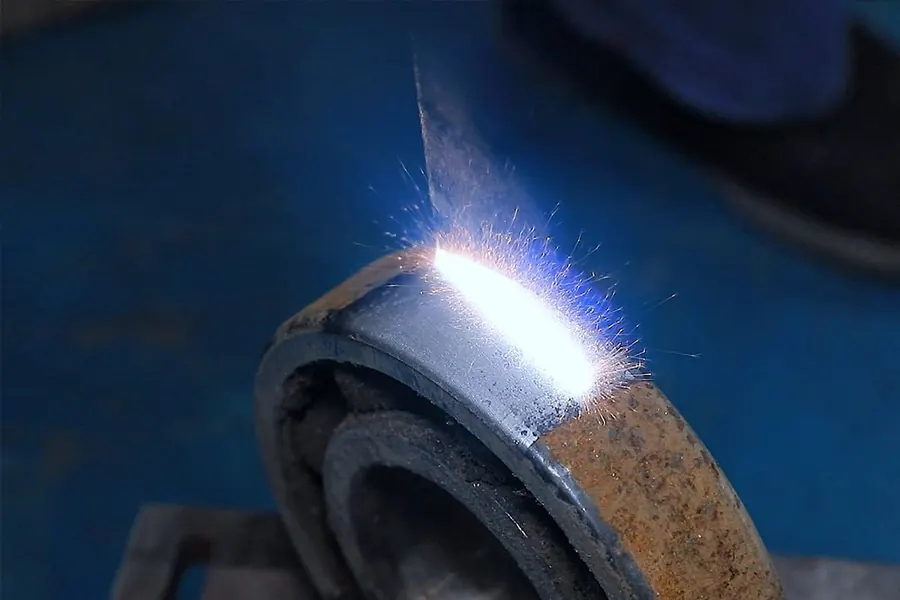

Industrie und Metallverarbeitung
Bauteil bleibt maßhaltig, Anlage läuft schnell wieder
Rost, Zunder, Schweißnähte und alte Beschichtungen runter, ohne die Kontur zu verändern und ohne die Anlage zu zerlegen. Wir kommen in die Halle, arbeiten punktgenau an der Stelle, die es braucht, und hinterlassen kein Strahlmittel in Führungen, Lagern oder Gewinden.
Instandhaltung · Fertigung · Schweißbetriebe · Maschinen- und Anlagenbau